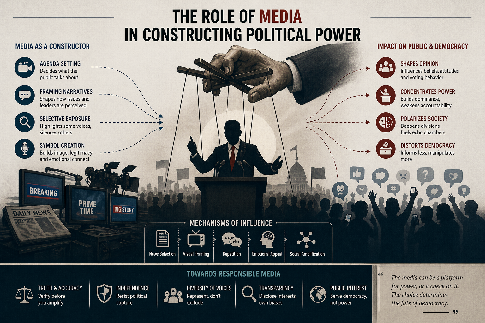
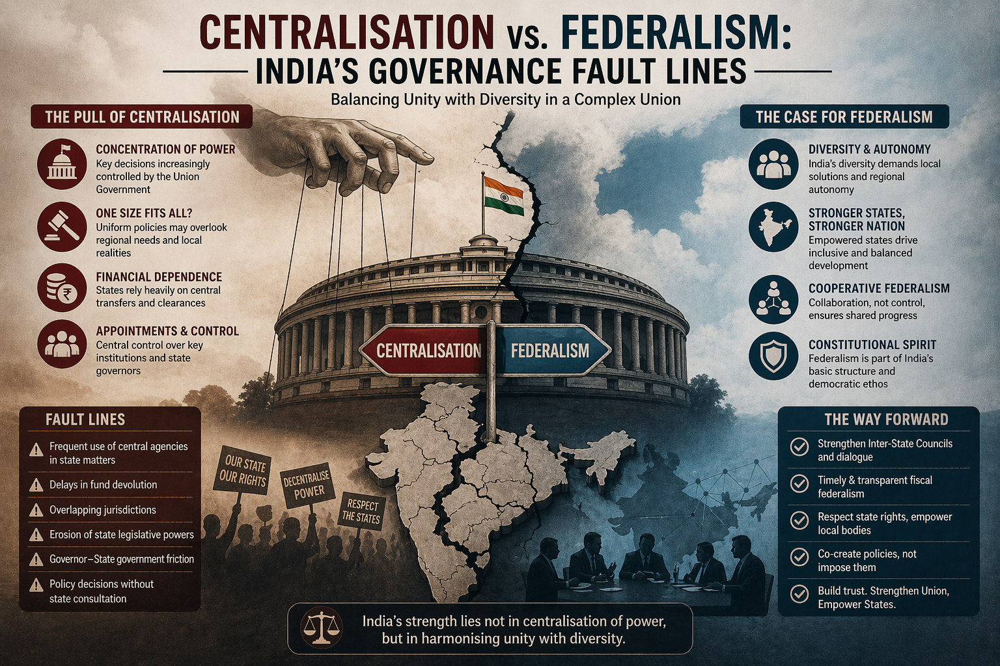

Writing & Research
All Articles
Structured analysis on democracy, power, governance, media, and political theory. Research grounded in academic literature and empirical evidence.
15 March 2024
Is Indian Democracy Weakening? An Institutional Analysis
Examining democratic backsliding indicators — from judicial independence to press freedom — assessed against global democracy indices and comparative frameworks.

📡2 February 2024
The Role of Media in Constructing Political Power
How broadcast television and social platforms shape narratives and function as instruments of both state power and democratic accountability.

🗺10 January 2024
Centralisation vs. Federalism: India's Governance Fault Lines
Investigating structural tension between Union authority and State autonomy — fiscal federalism, Governor's office, and concurrent list disputes.